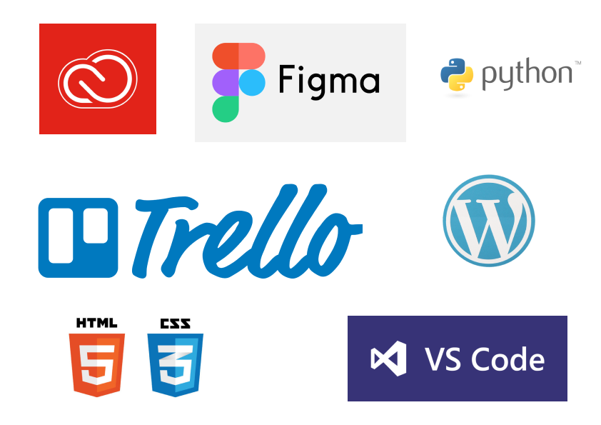
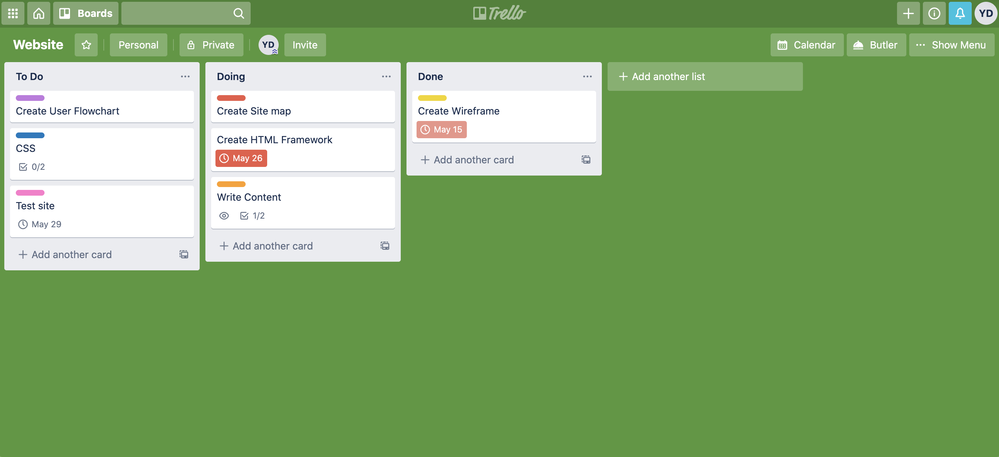
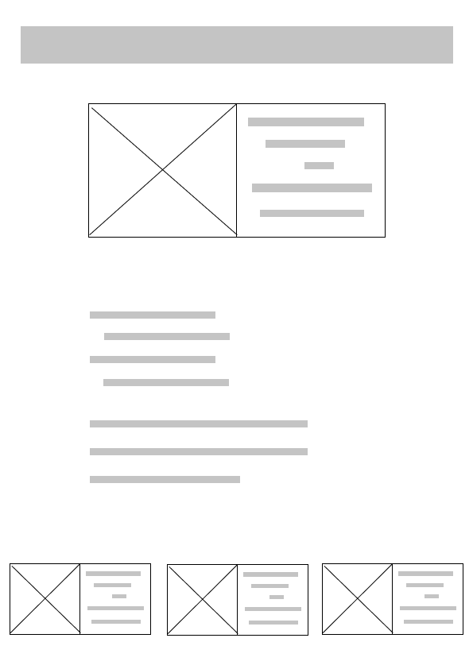
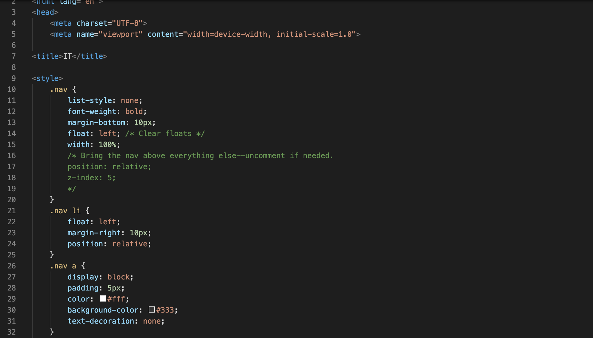
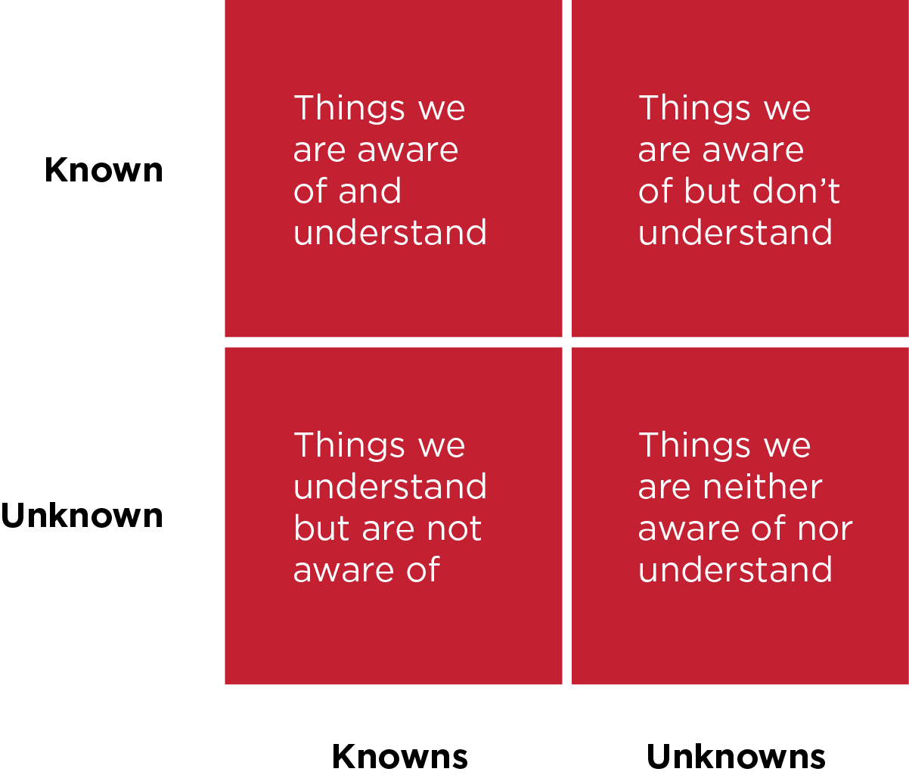

This is a social and cultural movement as much as it is a business one. The business ecosystem has changed drastically. (IoE) The Internet of Everything and (IoT) Internet of Things movements, have changed every aspect of our lives, since reliance on technology increases with each passing day by being constantly connected to the internet.
Every single day we witness the increase of IT and Information systems in front of our very eyes. There’s a new way to advertise, a new platform to manage work, another way to collaborate and connect. The rapid rhythm in which these technologies pop-up, constantly alters the way we work, communicate, educate, entertain, and connect with each other.
This means that IT and information systems are not limited to work, but also everyday life, and because of this it is no longer restricted to the back-end of businesses either. Instead technology has also caught up with the front-end of business in order to drive innovation.
We all know that Innovation is the path to business success, and like the industrial revolution at the turn of the century, this contemporary innovation movement is attributed to the digital revolution happening in front of our very eyes.
These days, it is extremely difficult to picture any business small, medium, or large, that has not benefited from technological development. Integrating different IT and digital methods in your business, will not at least ease the write-up and store of production records, financial planning, research on technical issues, and procurement.
To solve complex problems
Predict risk and make better decisions
To simplify workflow and create strategic production pipelines
To improve marketing and exposure
To increase revenue and growth
For recruitment purposes
To increase trust and offer more customer care and support
To better understand users’ needs, behaviours, and motives
1.2 Describe methods, skills and resources needed to complete digital projects successfully
Renovate the Workforce
What do you need to make projects successful? What tools? What skills?
Adopting digital means in a business creates more need for needs, meaning that workforces are also experiencing a vast shift. In PwC’s 2019 Global CEO Survey, 54% of chief executives said that skills shortages hindered their firm’s ability to innovate effectively. These companies are investing vast amounts of money in digital technology.
Therefore, they are compelled to change, if only because of the disruptive threat of new digitally enabled competition. Upskilling employees, especially as the role of IT continues to evolve into a more interdisciplinary field is now a necessity.
As we notice machines and AI becoming increasingly intelligent, employees are being trained to understand data types and infrastructures, machine learning and natural language processing in order to be able to work alongside these smart systems to remain relevant, agile and sustainable.
As workers across a company must become more tech-savvy, the same goes for workers in the IT department who must understand the nuances of marketing, creative, and cultural work.
This emphasises how important it is to respond strategically to the changing talent ecosystem by meaningfully understanding the value of multidisciplinarity. Not ‘jacks-of-all-traits’, I mean to recruit employees with soft skills, business acumen, and from a diversity of backgrounds - racial, cognitive, physical - not only extensive technology support skills and university degrees.
Diversity fosters creativity. We need to generate the best ideas from our people in all levels of the company and incorporate them into our business practices.
Frédéric Rozé, chief executive officer, L’Oréal USA
It is no longer simply a matter of creating a ‘heterogeneous’ workforce, but using that workforce to create the innovative products, services, and business practices that can set a company apart and give it a competitive advantage in the marketplace. And as companies compete on a global scale, diversity and inclusion frequently have to shift, as different markets and different cultures have varied definitions of what diversity means.
A study about diversity and inclusivity in the workforce conducted by Forbes demonstrated that among companies with more than $10 billion in annual revenues, 56% strongly agreed that diversity helps drive innovation.
Rosalind Hudnell, director of global diversity and inclusion at chip maker Intel stated:
Because of our diverse workforce, we’ve experienced a boost in productivity. When you can move people to contribute to their fullest, it has a tremendous impact... We have a vast amount of diversity in our company, that comes into work every day to build technology that plays out around the world. You can’t be successful on a global stage without it.
Today, diversity and inclusion efforts are de rigueur for almost all companies. Companies can’t be successful on a global platform if they don’t have a diverse and inclusive workforce. A diverse and inclusive workforce is necessary to drive innovation, foster creativity, and guide business strategies.
Multiple voices lead to new ideas, new services, and new products, and encourage out-of-the box thinking.
Digital Tools
Tech companies, and indeed all organisations in the digital economy, are coming to realise that digital skills are vital for employees in the digital era. It is more important than ever that new employees are cross-disciplined and have both hard and soft skills.
Front End: HTML, CSS, Javascript
Back-end developer languages: Python
Integrated Development Environment: VSCode, Project Jupyter
Adobe Design Systems
Wireframing
Figma
Azure
Social Media
SEO & Analytics
(UX) User Experience Design
(IxD) Interaction Design
Trello, Slack
1.3 Plan and carry out tasks using IT
My Process

In order to create and develop my website, I use a mixture of IT tools. Trello to manage, coordinate tasks, and monitor my daily activities. Adobe Software and Figma to create wireframes, flows, maps, and design content. VS Code to write script and source code using HTML and CSS. In the past, I have also used Python for software applications; alongside WordPress for content management and digital publishing.

I firstly begin by coordinating and planning tasks via trello. I create different cards for tasks in the ‘To Do’ section, grouped in colour-coded labels, with checklists and due dates, and I move these (and check them off), as I progress with my work. In this way I can monitor and track the progress of my work, without letting work slip through cracks. On the left, is a screenshot of my initial Trello board, when I began this project. Click on the following link to see how it has progressed since: Trello Board. You’ll notice that all cards have been moved to the ‘Done’ section.

After planning my workflow on Trello, I use design and prototyping tools to map out and visually how my site will look, function and work. To do this I create low-fidelity wireframes, as shown in the image on the left, which was the first wireframe created for the Homepage. Though, wireframe change over the iterative process, but are to visually communicate the basic structure.

When I have created the site’s wireframes, I then begin to create its infrastructure using HTML in VS Code, and then Styling it with CSS. The screenshot on the left represents a very early draft of CSS for this site. This changes as the site progresses, as it is an iterative process. When I have created the infrastructure with HTML, I start to input content and create features such as navigation bars, paragraphs, titles, sections, media, menus, etc. Following this, I style the content and features using CSS.
1.4 Risks in Digital Projects
What causes digital projects to fail? Why?
Risk mitigation is the term used for having a plan to address risk in a project. All projects, regardless of the size or nature of the project, should include risk mitigation during the planning process. By investing time upfront to address risks head-on, you’ll be better prepared to turn unexpected events into new opportunities, instead of spending your days putting out fires.

The biggest risk is failing to plan!
Not understanding what personal data is.
Many businesses fail to understand what personal data is and where it’s located. This means they underestimate the volume of personal data they’re responsible for and risk undermining their compliance efforts. Personal data doesn’t just consist of sensitive information such as health records, it also covers day-to-day information which is often overlooked, such as business email addresses. Becoming GDPR compliant was never going to be straightforward and many businesses continue to struggle with the challenge. But, there are steps that businesses can take to reduce the risks.
1.5 Selecting IT Systems & Software
How do you select the right kind of technology for the job?
Choosing software is not a quick or easy process. Many small businesses but are put off by the number of competing products, the amount of time needed to evaluate each one, or a fear of choosing the wrong solution. You can’t afford to make a mistake, in small businesses we just don’t have resources to spare, so it’s important to get it right first time.
Know your objective
Create a list of software requirements
Outline functional requirements
Review usability requirements
Make a list of technological preferences
Have budgetary requirements in mind
Think about reporting requirements
Searching for relevant applications
Trial software and compare it
Start narrowing down and excluding tools
1.6 Tech & Outcomes
As a project manager and developer on this project, I wear many hats: I am planning the activities, developing the front-end of the website, writing its content, and designing. Trello allows me to map out my dasks with a visualisation of the KanBan organisation process, in order to manage a boatload of information. I can track task statuses more effectively, and collaborate with stakeholders, when need be. It’s almost like a white board, filled with lists of sticky notes, with each note as a task for the work I need to undertake.
GitHub is an agile and versatile tool. It is an open-source repository hosting service, sort of like a cloud but for code. It hosts your source code projects in a variety of different programming languages and keeps track of the various changes made to every iteration. In this way, it allows for the publication of digital projects in a portfolio manner so a developer can see all of their projects to view together, rather than continuous trial and error searching on the web. Apart from offering more than a simple source code hosting service, it also provides developers and researchers a social coding platform, that supports peer review, commenting, and discussion, and with this a versioning control system. As a developer, this enables me not at least to create additional backups of my work instead of saving the code on a desktop or on a corporate server, but it also me to get inspired by code peers have developed and/or contribute to their project; and keep track of my own workflow.
1.7 GDPR
The General Data Protection Regulation (GDPR), 2018, is a legal framework that sets guidelines for the collection and processing of personal information from individuals who live in the European Union (EU).
The law replaces an earlier law, the EU Data Protection Directive, which only applied to those entities which processed personal data on equipment located within the EU. Once enacted, GDPR applies to any company that uses data to offer goods and services or uses data to track online behavior within the EU regardless of the company’s location.
GDPR states that data controllers must make sure it's the case that personal data is processed lawfully, transparently, and for a specific purpose. That means people must understand why their data is being processed, and how it is being processed, while that processing must abide by GDPR rules.
Following this data protection action builds trust with clients and fosters sustainable relationships mantaining a healthy digital ecosystem.
Processing includes the collection, organisation, structuring, storage, alteration, consultation, use, communication, combination, restriction, erasure or destruction of personal data.
Processed lawfully, fairly and in a transparent manner in relation to individuals (‘lawfulness, fairness and transparency’).
Collected for specified, explicit and legitimate purposes and not further processed in a manner that is incompatible with those purposes; further processing for archiving purposes in the public interest, scientific or historical research purposes or statistical purposes shall not be considered to be incompatible with the initial purposes (‘purpose limitation’).
Adequate, relevant and limited to what is necessary in relation to the purposes for which they are processed (‘data minimisation’).
Accurate and, where necessary, kept up to date; every reasonable step must be taken to ensure that personal data that are inaccurate, having regard to the purposes for which they are processed, are erased or rectified without delay (‘accuracy’).
Kept in a form which permits identification of data subjects for no longer than is necessary for the purposes for which the personal data are processed.
Processed in a manner that ensures appropriate security of the personal data, including protection against unauthorised or unlawful processing and against accidental loss, destruction or damage, using appropriate technical or organisational measures (‘integrity and confidentiality’).
Addressing GDPR issues in the course of providing IT services and solutions to clients struggle, but a necessity.
GDPR regulates how companies store data. For example, every business has to design data flows in its services having in mind the principle of data minimisation, meaning that the scope of collected data, the purposes of their processing, and their retention all have to be reduced to the absolute minimum. Organisations are now required to have a legitimate interest to collect and use data--no longer can they just collect it because they can. Organisations also must delete data after its intended use, and can no longer retain that information indefinitely.
2.1 & 2.2 Review the ongoing use of IT tools and change approach as needed
Describe whether the IT tools selected were appropriate
To develop the site I started by using figma to create low-fidelity wireframes that helped me visualise the structure of each page. These wireframes changed through the process of planning and laying out my resources: learning the opportunities and restrictions of HTML, the creative elements and constraints offered by CSS, alongside limited time to complete the assignment, and my own skill level. With all this in mind, I had to prioritise by areas of importance which I achieved using Trello as a planning tool, tailor my initial ambitions and expectations, narrowing these down to pragmatic decisions.
Therefore, as I scaled down how information would be curated on the site, and what different functions would eventually do, wireframes were slightly altered too. Figma is a useful tool, as it gives the user the option to track changes made on wireframes via draft-making. This gives the user the opportunity to see how an idea has progressed. This is a constructive component also offered by Trello. With its Kanban approach “Do, Doing, Done, the user is able to track their workflow, by creating different task cards with due dates, and can check these off once they are completed.
In this sense, Trello was an extremely useful tool, not at least to mitigate the confusion that comes with a busy schedule, and having to multitask with a tight deadline. But, it also ensures that information and tasks that need to be completed do not get missed under a stack of papers, a messy desktop full of notes, or an inbox full of unread emails - that instead these are given the attention needed to execute them.
For creating the website I used VS Code. This is a versatile tool, easy to navigate, and one of its best features is that it allows the user to understand errors in the code by highlighting these. This, in combination with its colour scheme makes the process of writing the front-end code less of strain and more of a constructive experience. I do feel like I barely scratched the surface with how this tool can be used. Saying that, I also understand the importance of managing expectations, especially in project’s with tight deadlines, and in this context it was an opportunity to develop learning foundations that can be individually advanced in the future.
Creating an external style sheet also helped in this process, as VS Code’s feature which allows for more than one workspace to be open, enables the user to edit HTML and CSS simultaneously. At various points though, I did switch to CodePen, we did not explore the use of this tool in class, but part of individual learning. I don’t feel that CodePen is a comfortable enough environment to write code, as offered by VS Code, but it is a great testing tool.
This is because the user has access to a live view feature in real-time as they are coding, which helped me make instant changes to my code in terms of what I wanted it to do, and look. On another note, open-source tools and educational websites for learning web technologies such as W3schools.com, and features provided by Google fonts, and inspector/develop mode on chrome, also helped me go further with my ideas, and build on others’ existing work.
2.3 Assess the strengths and weaknesses of your final project
Upon reflection, I would have planned the features and the site’s navigation systems better. However, this is an element that was constrained due to time. Given sufficient time to allow for adequate exploration of vast features that exist, and to see how these are developed and implemented, and further usability experimentation.
Through prioritising specific elements and components on the site, like the copy and how it would be presented, as well demonstrating knowledge and skill acquired of HTMl & CSS through the different features, I came to the decision that a simple design and structure would be the most strategic and powerful in order to communicate what I have learnt, and how I apply it.
2.4 Describe further improvements you can make to your project
I would deffinetely arrange the navigation bar and website buttons slightly differently for a more enhanced design, and presented these with responsive features. Considering this, I could create a sub sub menu for the navigation bar on the blog page. Intially I had all sections laid out as a submenu, but this was much diffuclt to navigate, therefore I prefered to keep Unit1, Unit2, as submenus on the blog instead. I would like to present the blog page as a grid, where each post on the blog or section is presented as a thumbnail, the user clicks on the image and it directs them to another page. In this way, the page is easier to navigate, and the user can choose what they would like to read instead of scrolling to find a section. I could also showcase a portfolio of work on the homepage, with images and descriptions using built-in gallery functions with CSS.
2.5 Review outcomes to make sure they match requirements and are fit for purpose
For the purposes of this exercise, my website fits the procedural requirements. What I mean here is that it responded to objects that I set it out to do, like communicate information and what I have learnt/achieved on this course. I demonstrated this through coding the infrastructure and backbone of the site using HTML, styling it using CSS, and managing tasks via Trello. This was then enhanced, by demonstrating my knowledge of IT systems, etc. through the copy written and presented on the site’s Blog.
3.1 Review the benefits and drawbacks of IT tools and systems used in terms of productivity and efficiency
To undertake this activity individually is a learning curve. I think it was definitely a fruitful option for us to execute and deliver on our own. Of course, a team environment is beneficial in itself, where the workload is shared tending to a tight deadline. Deliverables in team work are sometimes easier to attain, as projects are broken up into tasks, and those tasks are coordinated by dividing them up, and then given to each and every person on a team; as opposed to having one person multitask without enough time to complete all tasks given.
Trello for instance is a great example, as it's a good management tool to tackle complex projects with multiple branches, and to coordinate teams. It is also a strategic tool to use for individual projects. Though, considering the weight of workload having to undertake on this project, Trello, adds up to the admin that needs to be undertaken; when, in fact, more attention can be given to exploring different features and what one can do when developing and creating a site. Therefore, although Trello is useful, I do think it restricted productivity on this project.
3.2 Describe ways to improve productivity and efficiency
To always begin with writing a few objectives. This helps define the product that is being designed, who will use it, what will it be used for, etc. Writing out clear objectives and revisiting them every now and then, throughout the process of development is useful, as these will remind the developer what they are making and the reasons behind it. This act increases productivity and efficiency, during an iterative cycle of back and forth, as it keeps the developer focused on the end goal. Another method is to start the day with 3 goals or tasks that need to be achieved. I find that the ticking thing off my list, which can also be performed via Trello, is quite satisfactory in the sense that objectives and aims have been achieved. This also aids the process of keeping track of work which helps being productive.
3.3 Develop solutions to improve own productivity using IT in digital projects
I would definitely make this assignment a team effort, with clear objectives and criteria of the work that needs to be undertaken, and how the work will be marked. I would make sure that each student developer takes over a part of the site. For this I would use GitHub as a collaborating coding resource. Students decide on stylesheets together and all follow these specific guidelines. On another note I would suggest, instead of diving right in, to spend some time explore sites and site components, brainstorming on structure and features, drawing a 2D wireframe of the site, and then creating a grid for the page. After this, I would start writing content, etc.
3.4 Describe how you would go about testing digital solutions
In order to test digital solutions, I would conduct an A/B testing, where everyone in the team tests and reviews each others’ work. This helps with gathering feedback on presentation, functionality, and usability. The feedback can then be implemented to make the website better or any other digital solution developed more efficient and closer to the initial objective set at the beginning of the project. This also resembles how teams operate in the industry. Before organising user testing activities, and sharing it with the world, the inside team usually evaluates it. After findings have been turned into actionable insights and implemented to create a better and more functional testing, it can then be tested on a wider group of users. In the first stage of testing, I have tested this site on different browsers to see how it works aqnd if it responds to different systems, and I have tested navigation
and external links.
1.1 Describing the content and layout for each page
I chose a simple design, complemented by an easy-on-the eyes colour scheme, grey, purple, and white. Colour schemes such as this ensure the prevention of eye strain and fatigue as they offer low intensity together with a medium/high contrast. In later stages of development, I also added several red shadows to Heading text, to give enphasis and visual appeal. When having to present a large amount of writing it is important that this is presented in a readable manner. This means setting out margins to copy is tidy and attractive; using fonts style, size, and weight that are legible; dividing sections into headers and subheaders; images to illustrate points and communicate information visually; and offering links to further reading in the style of buttons or expanding menus, when necessary. I combined all this with an easy to access navigation bar at the top of each page. It is important that every page in the site follows consistent styling guides, this is what I have done with my site.
HOME
The first page is the Homepage. This lays out an ‘About Me’ section with a brief about my work, interests, and profile, including visual content, and links to external sites. This page has a navigation menu at the top, that gives the site visitor the option to navigate through the site’s different pages.
BLOG
This page follows the styling guidelines of the very first page, described above, but at the same, in order to accommodate for other types of elements and copy, it has slightly different navigation menus, with a dropdown function to accommodate the page’s sections, Unit 1, Unit 2. Intially, each assignment question was given a heading with an anchor link, as I wanted to make it easier for the user to navigate the page, instead of having to eternally scoll, but this proved to be quite dysfuntional, as I ended up with a submenu of 20 sections. Instead, I decided to stick with two main ones, to keep it simple, tidy, and focused.
Contact
A simple layout following style guidelines from the pages discussed above, in terms of colour schemes, and navigation bar. The page also includes a contact form, where a visitor can input details and subject of interest in order to get in touch.
1.5 Describing copyright and other constraints affecting websites
Copyright refers to the legal protection of original works of authorship and intellectual property. Websites containing written material, graphics, logos, and other visual and sound elements. This firmly categorises these as copyrightable material.
The law in the U.K. is the Copyright, Designs and Patents Act 1988, it protects original creations, for instance: literary work, music, art, film, and sound. A supplemental law, the Copyright (Computer Programs) Regulations 1992 extends protection to software, which is normally protected under laws and agencies unique from copyright.
Works are protected upon creation, meaning as soon as you post your website, you enjoy copyright protection. However, the U.K. Copyright Service highly recommends registration because websites are subject to abuse and that process allows a civil cause of action.
In this sense, it can be assumed that material shareware, freeware, or materials labeled “royalty-free” or “copyright-free” can be distributed or copied without authorisation. People using this material need to gather consent from the creator by seeking permission.
1.6 Describing access issues that need taking into account
Accessible websites are those that can be used by all intended visitors, taking into account differing capabilities. Inaccessible websites cause significant barriers to people with disabilities.For example, font and background colour combinations with low contrast can be a struggle for visitors with low vision or colour blindness. This can also include older people who lose contrast sensitivity from aging, and people with reading disabilities, such as dyslexia and dyslexia. Another accessibility issue could is keyboard accessibility. Users with motor disabilities, and screen magnification users rely on a keyboard.
Therefore, visual indication shows keyboard users their location on a specific page. Another issue to be aware is images. These should include equivalent alternative text in the markup/code, otherwise the image information is inaccessible - for example, to people who cannot see and use a screen reader that reads aloud the information on a page, including the alt text for the visual image. In this sense, providing alt text, the image information becomes available to people who are blind, as well as to people who turn off images (for bandwidth issues).
1.7 Describe which are the appropriate filetypes for websites
A file type, name, and extension indicates the type of file, how the web server uses it, and how you can access it. Some of the most common files on web servers are Web pages(.html and .htm), Images (SVG, GIF, TIFF, .jpg, .png), Scripts (.JS), etc.Hypertext Markup Language is the standard markup language for documents designed to be displayed in a web browser. It can be assisted by technologies such as Cascading Style Sheets and scripting languages such as JavaScript (.JS).